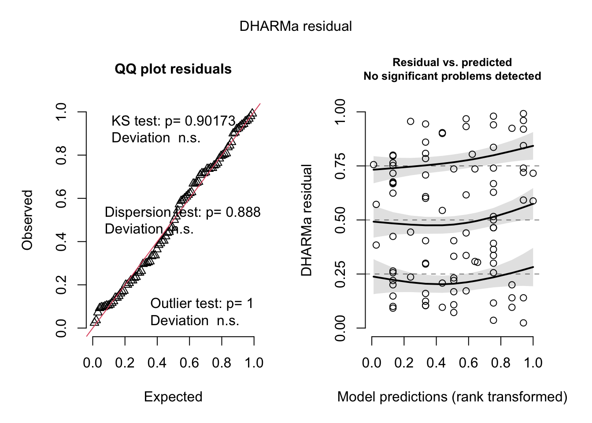
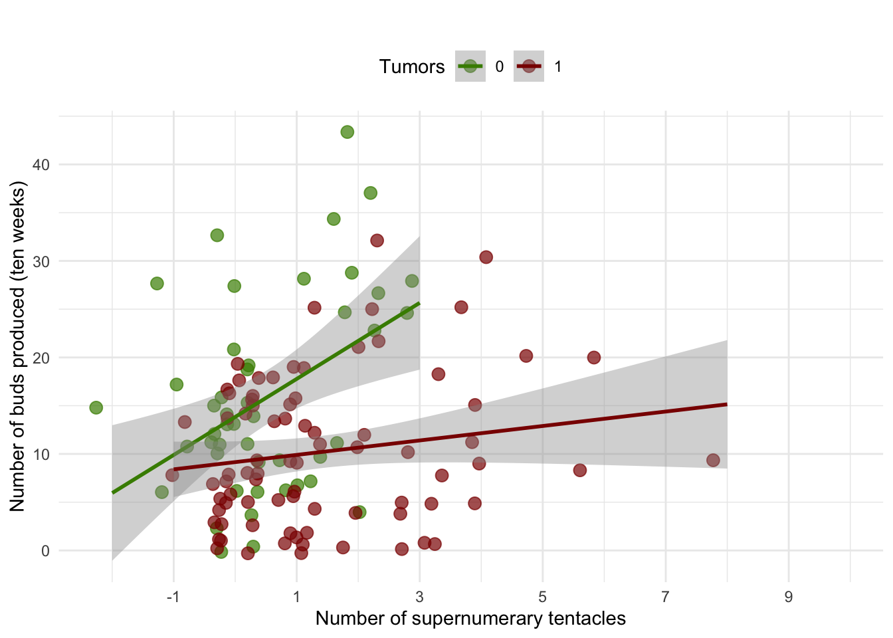

Analysis of Parameters Influencing the Number of Buds Produced during the Study
Transmissible tumors dataset
Global model selection
donor_transN <- subset(donor_trans, donor_trans$abnormalities == "Normal")
models <- glmulti(buds_10 ~ donor * donor_status * receiver * diff_maxR * Tumors,
data = donor_transN, level = 2, method = "h", crit = "aicc", fitfunction = "lm",
pl = FALSE)
tmp <- weightable(models)
tmp2 <- tmp[tmp$aicc <= min(tmp$aicc) + 2, ]
tmp2
best_rt1 <- lm(buds_10 ~ 1 + donor + donor_status + receiver + Tumors + diff_maxR +
receiver:donor_status + Tumors:receiver + Tumors:diff_maxR, data = donor_transN)
best_rt2 <- lm(buds_10 ~ 1 + donor + donor_status + receiver + Tumors + diff_maxR +
receiver:donor_status + Tumors:donor_status + Tumors:receiver, data = donor_transN)
best_rt3 <- lm(buds_10 ~ 1 + donor + donor_status + receiver + Tumors + diff_maxR +
receiver:donor_status + Tumors:donor_status + Tumors:receiver + Tumors:diff_maxR,
data = donor_transN)
best_rt4 <- lm(buds_10 ~ 1 + donor + donor_status + receiver + Tumors + diff_maxR +
donor_status:donor + receiver:donor_status + Tumors:receiver + Tumors:diff_maxR,
data = donor_transN)
best_rt5 <- lm(buds_10 ~ 1 + donor + donor_status + receiver + Tumors + diff_maxR +
receiver:donor_status + Tumors:receiver, data = donor_transN)
best_rt6 <- lm(buds_10 ~ 1 + donor + donor_status + receiver + Tumors + diff_maxR +
receiver:donor_status + Tumors:donor_status + Tumors:receiver + donor:diff_maxR,
data = donor_transN)
tab_model(best_rt1, best_rt2, best_rt3, best_rt4, best_rt5, best_rt6, show.intercept = F)
It appears that the appearance of tumors in certain receivers and the
interaction of recipient and donor status are the factors influencing
the most the number of buds produced. However, the number of tentacles
also seems to play a role that cannot be ruled out. To focus the
analysis on our parameters of interest, we will create groups of donors
and recipients to analyze the general relationship between tentacle
number and budding at the intra-group level.
Intra-group analysis
donor_transN$groupDR <- paste0(donor_transN$donor, donor_transN$donor_status, donor_transN$receiver)
best_rt10.4 <- lmer(buds_10 ~ 1 + diff_maxR * Tumors + (1 | groupDR), data = donor_transN)
best_rt10.3 <- lmer(buds_10 ~ 1 + diff_maxR + Tumors + (1 | groupDR), data = donor_transN)
best_rt10.2 <- lmer(buds_10 ~ 1 + diff_maxR + (1 | groupDR), data = donor_transN)
best_rt10.1 <- lmer(buds_10 ~ 1 + Tumors + (1 | groupDR), data = donor_transN)
best_rt10.0 <- lmer(buds_10 ~ 1 + (1 | groupDR), data = donor_transN)
AICc(best_rt10.4, best_rt10.3, best_rt10.2, best_rt10.1, best_rt10.0)## df AICc
## best_rt10.4 6 648.2747
## best_rt10.3 5 653.0875
## best_rt10.2 4 660.7359
## best_rt10.1 4 673.5175
## best_rt10.0 3 678.8187
Table of the results of the best fitted models (lower AICc+2)
| buds_10 | buds_10 | buds_10 | buds_10 | buds_10 | |||||||||||
|---|---|---|---|---|---|---|---|---|---|---|---|---|---|---|---|
| Predictors | Estimates | CI | p | Estimates | CI | p | Estimates | CI | p | Estimates | CI | p | Estimates | CI | p |
| diff maxR | 2.99 | 0.71 – 5.27 | 0.011 | 0.71 | -0.33 – 1.76 | 0.179 | 0.36 | -0.68 – 1.40 | 0.498 | ||||||
| Tumors [1] | -3.08 | -7.40 – 1.24 | 0.160 | -5.29 | -9.19 – -1.38 | 0.009 | -4.02 | -7.72 – -0.32 | 0.033 | ||||||
| diff maxR × Tumors [1] | -2.75 | -5.21 – -0.29 | 0.029 | ||||||||||||
| Random Effects | |||||||||||||||
| σ2 | 58.63 | 60.95 | 63.37 | 60.53 | 61.64 | ||||||||||
| τ00 | 19.45 groupDR | 21.64 groupDR | 33.02 groupDR | 24.18 groupDR | 32.80 groupDR | ||||||||||
| ICC | 0.25 | 0.26 | 0.34 | 0.29 | 0.35 | ||||||||||
| N | 8 groupDR | 8 groupDR | 8 groupDR | 8 groupDR | 8 groupDR | ||||||||||
| Observations | 92 | 92 | 92 | 95 | 95 | ||||||||||
| Marginal R2 / Conditional R2 | 0.115 / 0.335 | 0.072 / 0.315 | 0.004 / 0.345 | 0.044 / 0.317 | 0.000 / 0.347 | ||||||||||
simulateResiduals(best_rt10.4, plot = T)
Final model results:
tab_model(best_rt10.4, show.intercept = F)| buds_10 | |||
|---|---|---|---|
| Predictors | Estimates | CI | p |
| diff maxR | 2.99 | 0.71 – 5.27 | 0.011 |
| Tumors [1] | -3.08 | -7.40 – 1.24 | 0.160 |
| diff maxR × Tumors [1] | -2.75 | -5.21 – -0.29 | 0.029 |
| Random Effects | |||
| σ2 | 58.63 | ||
| τ00 groupDR | 19.45 | ||
| ICC | 0.25 | ||
| N groupDR | 8 | ||
| Observations | 92 | ||
| Marginal R2 / Conditional R2 | 0.115 / 0.335 | ||
If we look at the intra-group level, the number of supernumerary
tentacles and the presence of tumors interact significantly to explain
the budding rate.
When does this relationship establish ?
best_rt10 <- lmer(buds_10 ~ 1 + tenta_10 * Tumors + (1 | groupDR), data = donor_transN)
best_rt9 <- lmer(buds_9 ~ 1 + tenta_9 * Tumors + (1 | groupDR), data = donor_transN)
best_rt8 <- lmer(buds_8 ~ 1 + tenta_8 * Tumors + (1 | groupDR), data = donor_transN)
best_rt7 <- lmer(buds_7 ~ 1 + tenta_7 * Tumors + (1 | groupDR), data = donor_transN)
best_rt6 <- lmer(buds_6 ~ 1 + tenta_6 * Tumors + (1 | groupDR), data = donor_transN)
best_rt5 <- lmer(buds_5 ~ 1 + tenta_5 * Tumors + (1 | groupDR), data = donor_transN)
best_rt4 <- lmer(buds_4 ~ 1 + tenta_4 * Tumors + (1 | groupDR), data = donor_transN)
best_rt3 <- lmer(buds_3 ~ 1 + tenta_3 * Tumors + (1 | groupDR), data = donor_transN)
best_rt2 <- lmer(buds_2 ~ 1 + tenta_2 * Tumors + (1 | groupDR), data = donor_transN)
best_rt1 <- lmer(buds_1 ~ 1 + tenta_1 * Tumors + (1 | groupDR), data = donor_transN)
tab_model(best_rt10, best_rt9, best_rt8, best_rt7, best_rt6, best_rt5, best_rt4,
best_rt3, best_rt2, best_rt1, show.intercept = F)| buds_10 | buds_9 | buds_8 | buds_7 | buds_6 | buds_5 | buds_4 | buds_3 | buds_2 | buds_1 | |||||||||||||||||||||
|---|---|---|---|---|---|---|---|---|---|---|---|---|---|---|---|---|---|---|---|---|---|---|---|---|---|---|---|---|---|---|
| Predictors | Estimates | CI | p | Estimates | CI | p | Estimates | CI | p | Estimates | CI | p | Estimates | CI | p | Estimates | CI | p | Estimates | CI | p | Estimates | CI | p | Estimates | CI | p | Estimates | CI | p |
| tenta 10 | 4.87 | 1.98 – 7.75 | 0.001 | |||||||||||||||||||||||||||
| Tumors [1] | 20.45 | 3.48 – 37.42 | 0.019 | 11.30 | 1.36 – 21.24 | 0.026 | 10.62 | 0.07 – 21.18 | 0.049 | 15.78 | 6.99 – 24.58 | 0.001 | 5.23 | -3.13 – 13.58 | 0.218 | 3.78 | -1.89 – 9.46 | 0.189 | 3.65 | -0.86 – 8.15 | 0.112 | 0.53 | -3.37 – 4.42 | 0.789 | -0.12 | -2.25 – 2.00 | 0.908 | -0.66 | -1.88 – 0.56 | 0.289 |
| tenta 10 × Tumors [1] | -4.57 | -7.58 – -1.56 | 0.003 | |||||||||||||||||||||||||||
| tenta 9 | 2.93 | 1.38 – 4.49 | <0.001 | |||||||||||||||||||||||||||
| tenta 9 × Tumors [1] | -2.68 | -4.43 – -0.94 | 0.003 | |||||||||||||||||||||||||||
| tenta 8 | 2.62 | 0.96 – 4.28 | 0.002 | |||||||||||||||||||||||||||
| tenta 8 × Tumors [1] | -2.23 | -4.04 – -0.42 | 0.016 | |||||||||||||||||||||||||||
| tenta 7 | 3.30 | 1.93 – 4.68 | <0.001 | |||||||||||||||||||||||||||
| tenta 7 × Tumors [1] | -3.16 | -4.69 – -1.62 | <0.001 | |||||||||||||||||||||||||||
| tenta 6 | 1.45 | 0.16 – 2.75 | 0.028 | |||||||||||||||||||||||||||
| tenta 6 × Tumors [1] | -1.12 | -2.61 – 0.36 | 0.136 | |||||||||||||||||||||||||||
| tenta 5 | 0.91 | 0.05 – 1.77 | 0.038 | |||||||||||||||||||||||||||
| tenta 5 × Tumors [1] | -0.77 | -1.77 – 0.22 | 0.128 | |||||||||||||||||||||||||||
| tenta 4 | 0.90 | 0.27 – 1.53 | 0.006 | |||||||||||||||||||||||||||
| tenta 4 × Tumors [1] | -0.72 | -1.48 – 0.05 | 0.066 | |||||||||||||||||||||||||||
| tenta 3 | 0.37 | -0.21 – 0.95 | 0.210 | |||||||||||||||||||||||||||
| tenta 3 × Tumors [1] | -0.14 | -0.82 – 0.55 | 0.699 | |||||||||||||||||||||||||||
| tenta 2 | -0.03 | -0.33 – 0.28 | 0.861 | |||||||||||||||||||||||||||
| tenta 2 × Tumors [1] | 0.04 | -0.34 – 0.42 | 0.846 | |||||||||||||||||||||||||||
| tenta 1 | -0.05 | -0.22 – 0.12 | 0.575 | |||||||||||||||||||||||||||
| tenta 1 × Tumors [1] | 0.14 | -0.07 – 0.36 | 0.189 | |||||||||||||||||||||||||||
| Random Effects | ||||||||||||||||||||||||||||||
| σ2 | 56.37 | 46.86 | 41.98 | 29.99 | 24.69 | 15.82 | 9.96 | 4.84 | 1.62 | 0.37 | ||||||||||||||||||||
| τ00 | 15.35 groupDR | 19.27 groupDR | 14.62 groupDR | 6.05 groupDR | 6.05 groupDR | 3.66 groupDR | 1.37 groupDR | 0.94 groupDR | 0.40 groupDR | 0.08 groupDR | ||||||||||||||||||||
| ICC | 0.21 | 0.29 | 0.26 | 0.17 | 0.20 | 0.19 | 0.12 | 0.16 | 0.20 | 0.18 | ||||||||||||||||||||
| N | 8 groupDR | 8 groupDR | 8 groupDR | 8 groupDR | 8 groupDR | 8 groupDR | 8 groupDR | 8 groupDR | 8 groupDR | 8 groupDR | ||||||||||||||||||||
| Observations | 95 | 91 | 111 | 116 | 125 | 138 | 146 | 147 | 152 | 154 | ||||||||||||||||||||
| Marginal R2 / Conditional R2 | 0.149 / 0.331 | 0.126 / 0.381 | 0.079 / 0.317 | 0.164 / 0.304 | 0.040 / 0.229 | 0.031 / 0.213 | 0.053 / 0.168 | 0.018 / 0.177 | 0.001 / 0.201 | 0.024 / 0.204 | ||||||||||||||||||||
The relationship between the number of tentacles, the tumor presence,
and the budding seems to appear only after the third week, corresponding
to the establishment of the tumorous phenotype and the increase in the
number of tentacles.
Spontaneaous tumors dataset
Global model selection
donor_spontN <- subset(donor_spont, donor_spont$abnormalities == "Normal")
models <- glmulti(buds_10 ~ donor * donor_status * receiver * diff_maxR * Tumors,
data = donor_spontN, level = 2, method = "h", crit = "aicc", fitfunction = "lm",
pl = FALSE)
tmp <- weightable(models)
tmp2 <- tmp[tmp$aicc <= min(tmp$aicc) + 2, ]
tmp2
best_rt1 <- lm(buds_10 ~ 1 + donor + receiver + Tumors + diff_maxR + receiver:donor +
Tumors:donor + donor_status:diff_maxR, data = donor_spontN)
best_rt2 <- lm(buds_10 ~ 1 + donor + receiver + Tumors + diff_maxR + receiver:donor +
Tumors:donor + donor_status:diff_maxR + receiver:diff_maxR, data = donor_spontN)
best_rt3 <- lm(buds_10 ~ 1 + donor + receiver + diff_maxR + receiver:donor + donor:diff_maxR +
donor_status:diff_maxR, data = donor_spontN)
best_rt4 <- lm(buds_10 ~ 1 + donor + donor_status + receiver + Tumors + diff_maxR +
receiver:donor + Tumors:donor + donor_status:diff_maxR, data = donor_spontN)
best_rt5 <- lm(buds_10 ~ 1 + donor + donor_status + receiver + diff_maxR + receiver:donor +
donor:diff_maxR + donor_status:diff_maxR, data = donor_spontN)
best_rt6 <- lm(buds_10 ~ 1 + donor + receiver + Tumors + diff_maxR + receiver:donor +
Tumors:donor + donor_status:diff_maxR + Tumors:diff_maxR, data = donor_spontN)
best_rt7 <- lm(buds_10 ~ 1 + donor + receiver + Tumors + diff_maxR + receiver:donor +
Tumors:donor + donor_status:diff_maxR + Tumors:diff_maxR, data = donor_spontN)
best_rt8 <- lm(buds_10 ~ 1 + donor + donor_status + receiver + Tumors + diff_maxR +
donor_status:donor + receiver:donor + Tumors:donor + donor_status:diff_maxR,
data = donor_spontN)
best_rt9 <- lm(buds_10 ~ 1 + donor + receiver + Tumors + diff_maxR + receiver:donor +
Tumors:donor + donor:diff_maxR + donor_status:diff_maxR, data = donor_spontN)
tab_model(best_rt1, best_rt2, best_rt3, best_rt4, best_rt5, best_rt6, best_rt7, best_rt8,
best_rt9, show.intercept = F)
It seems that the appearance of tumors in certain donors and the
interaction of recipient and donor are the factors influencing the most
the number of buds. The number of tentacles also seems to play a role
when the donor was tumorous. To focus the analysis on the parameters of
interest, we will create groups of donors and recipients.
Intra group analysis
donor_spontN$groupDR <- as.factor(paste0(donor_spontN$donor, donor_spontN$donor_status,
donor_spontN$receiver))
summary(donor_spontN$groupDR)## MTNTSpB MTNTTV MTTSpB MTTTV SpBNTSpB SpBNTTV SpBTSpB SpBTTV
## 6 10 7 9 19 28 10 6best_rt10.4 <- lmer(buds_10 ~ 1 + diff_maxR * Tumors + (1 | groupDR), data = donor_spontN)
best_rt10.3 <- lmer(buds_10 ~ 1 + diff_maxR + Tumors + (1 | groupDR), data = donor_spontN)
best_rt10.2 <- lmer(buds_10 ~ 1 + diff_maxR + (1 | groupDR), data = donor_spontN)
best_rt10.1 <- lmer(buds_10 ~ 1 + Tumors + (1 | groupDR), data = donor_spontN)
best_rt10.0 <- lmer(buds_10 ~ 1 + (1 | groupDR), data = donor_spontN)
AICc(best_rt10.4, best_rt10.3, best_rt10.2, best_rt10.1, best_rt10.0)## df AICc
## best_rt10.4 6 373.7325
## best_rt10.3 5 376.3829
## best_rt10.2 4 377.8042
## best_rt10.1 4 399.9832
## best_rt10.0 3 400.6056Table of the results of the best fitted models (lower AICc+2)
| buds_10 | buds_10 | buds_10 | buds_10 | buds_10 | |||||||||||
|---|---|---|---|---|---|---|---|---|---|---|---|---|---|---|---|
| Predictors | Estimates | CI | p | Estimates | CI | p | Estimates | CI | p | Estimates | CI | p | Estimates | CI | p |
| diff maxR | -1.59 | -5.37 – 2.19 | 0.402 | 0.83 | -0.60 – 2.25 | 0.248 | 0.64 | -0.73 – 2.01 | 0.352 | ||||||
| Tumors [1] | -2.29 | -5.84 – 1.25 | 0.200 | -1.64 | -5.09 – 1.81 | 0.346 | -0.62 | -3.80 – 2.56 | 0.697 | ||||||
| diff maxR × Tumors [1] | 2.79 | -1.25 – 6.83 | 0.172 | ||||||||||||
| Random Effects | |||||||||||||||
| σ2 | 29.43 | 30.04 | 30.20 | 29.18 | 28.83 | ||||||||||
| τ00 | 20.67 groupDR | 20.23 groupDR | 18.91 groupDR | 20.26 groupDR | 19.60 groupDR | ||||||||||
| ICC | 0.41 | 0.40 | 0.39 | 0.41 | 0.40 | ||||||||||
| N | 8 groupDR | 8 groupDR | 8 groupDR | 8 groupDR | 8 groupDR | ||||||||||
| Observations | 58 | 58 | 58 | 62 | 62 | ||||||||||
| Marginal R2 / Conditional R2 | 0.040 / 0.436 | 0.021 / 0.415 | 0.010 / 0.391 | 0.002 / 0.411 | 0.000 / 0.405 | ||||||||||
tab_model(best_rt10.4, show.intercept = F)| buds_10 | |||
|---|---|---|---|
| Predictors | Estimates | CI | p |
| diff maxR | -1.59 | -5.37 – 2.19 | 0.402 |
| Tumors [1] | -2.29 | -5.84 – 1.25 | 0.200 |
| diff maxR × Tumors [1] | 2.79 | -1.25 – 6.83 | 0.172 |
| Random Effects | |||
| σ2 | 29.43 | ||
| τ00 groupDR | 20.67 | ||
| ICC | 0.41 | ||
| N groupDR | 8 | ||
| Observations | 58 | ||
| Marginal R2 / Conditional R2 | 0.040 / 0.436 | ||
If we look at the intra-group level, there is no clear relationship,
which is quite expected given the absence of an increased number of
tentacles when the donor was a spontaneous tumor.
When does this relationship establish ?
best_rt10 <- lmer(buds_10 ~ 1 + tenta_10 * Tumors + (1 | groupDR), data = donor_spontN)
best_rt9 <- lmer(buds_9 ~ 1 + tenta_9 * Tumors + (1 | groupDR), data = donor_spontN)
best_rt8 <- lmer(buds_8 ~ 1 + tenta_8 * Tumors + (1 | groupDR), data = donor_spontN)
best_rt7 <- lmer(buds_7 ~ 1 + tenta_7 * Tumors + (1 | groupDR), data = donor_spontN)
best_rt6 <- lmer(buds_6 ~ 1 + tenta_6 * Tumors + (1 | groupDR), data = donor_spontN)
best_rt5 <- lmer(buds_5 ~ 1 + tenta_5 * Tumors + (1 | groupDR), data = donor_spontN)
best_rt4 <- lmer(buds_4 ~ 1 + tenta_4 * Tumors + (1 | groupDR), data = donor_spontN)
best_rt3 <- lmer(buds_3 ~ 1 + tenta_3 * Tumors + (1 | groupDR), data = donor_spontN)
best_rt2 <- lmer(buds_2 ~ 1 + tenta_2 * Tumors + (1 | groupDR), data = donor_spontN)
best_rt1 <- lmer(buds_1 ~ 1 + tenta_1 * Tumors + (1 | groupDR), data = donor_spontN)
tab_model(best_rt10, best_rt9, best_rt8, best_rt7, best_rt6, best_rt5, best_rt4,
best_rt3, best_rt2, best_rt1, show.intercept = F)| buds_10 | buds_9 | buds_8 | buds_7 | buds_6 | buds_5 | buds_4 | buds_3 | buds_2 | buds_1 | |||||||||||||||||||||
|---|---|---|---|---|---|---|---|---|---|---|---|---|---|---|---|---|---|---|---|---|---|---|---|---|---|---|---|---|---|---|
| Predictors | Estimates | CI | p | Estimates | CI | p | Estimates | CI | p | Estimates | CI | p | Estimates | CI | p | Estimates | CI | p | Estimates | CI | p | Estimates | CI | p | Estimates | CI | p | Estimates | CI | p |
| tenta 10 | 0.94 | -2.33 – 4.21 | 0.568 | |||||||||||||||||||||||||||
| Tumors [1] | -6.84 | -23.33 – 9.64 | 0.409 | -6.17 | -17.01 – 4.67 | 0.259 | -3.51 | -15.38 – 8.36 | 0.557 | -1.71 | -11.55 – 8.14 | 0.730 | -6.97 | -15.84 – 1.91 | 0.122 | -2.05 | -8.39 – 4.28 | 0.521 | -1.84 | -5.94 – 2.26 | 0.375 | -1.02 | -4.99 – 2.95 | 0.610 | -1.22 | -3.57 – 1.13 | 0.305 | -0.23 | -1.66 – 1.20 | 0.748 |
| tenta 10 × Tumors [1] | 0.90 | -2.48 – 4.27 | 0.597 | |||||||||||||||||||||||||||
| tenta 9 | 0.04 | -1.86 – 1.94 | 0.967 | |||||||||||||||||||||||||||
| tenta 9 × Tumors [1] | 1.14 | -1.02 – 3.30 | 0.294 | |||||||||||||||||||||||||||
| tenta 8 | 0.33 | -1.77 – 2.44 | 0.752 | |||||||||||||||||||||||||||
| tenta 8 × Tumors [1] | 0.70 | -1.59 – 2.99 | 0.543 | |||||||||||||||||||||||||||
| tenta 7 | 0.83 | -0.72 – 2.37 | 0.289 | |||||||||||||||||||||||||||
| tenta 7 × Tumors [1] | 0.33 | -1.60 – 2.27 | 0.730 | |||||||||||||||||||||||||||
| tenta 6 | -0.26 | -1.91 – 1.39 | 0.756 | |||||||||||||||||||||||||||
| tenta 6 × Tumors [1] | 1.48 | -0.31 – 3.26 | 0.103 | |||||||||||||||||||||||||||
| tenta 5 | 0.50 | -0.64 – 1.64 | 0.384 | |||||||||||||||||||||||||||
| tenta 5 × Tumors [1] | 0.39 | -0.87 – 1.65 | 0.537 | |||||||||||||||||||||||||||
| tenta 4 | 0.44 | -0.02 – 0.90 | 0.060 | |||||||||||||||||||||||||||
| tenta 4 × Tumors [1] | 0.33 | -0.45 – 1.10 | 0.403 | |||||||||||||||||||||||||||
| tenta 3 | 0.28 | -0.40 – 0.95 | 0.414 | |||||||||||||||||||||||||||
| tenta 3 × Tumors [1] | 0.18 | -0.59 – 0.95 | 0.645 | |||||||||||||||||||||||||||
| tenta 2 | -0.05 | -0.40 – 0.29 | 0.765 | |||||||||||||||||||||||||||
| tenta 2 × Tumors [1] | 0.26 | -0.19 – 0.71 | 0.254 | |||||||||||||||||||||||||||
| tenta 1 | 0.05 | -0.14 – 0.24 | 0.592 | |||||||||||||||||||||||||||
| tenta 1 × Tumors [1] | 0.07 | -0.19 – 0.34 | 0.578 | |||||||||||||||||||||||||||
| Random Effects | ||||||||||||||||||||||||||||||
| σ2 | 24.80 | 29.06 | 22.96 | 17.56 | 12.25 | 8.53 | 5.15 | 3.59 | 1.28 | 0.33 | ||||||||||||||||||||
| τ00 | 18.39 groupDR | 13.96 groupDR | 11.59 groupDR | 5.69 groupDR | 4.76 groupDR | 3.65 groupDR | 1.81 groupDR | 0.86 groupDR | 0.23 groupDR | 0.03 groupDR | ||||||||||||||||||||
| ICC | 0.43 | 0.32 | 0.34 | 0.24 | 0.28 | 0.30 | 0.26 | 0.19 | 0.15 | 0.08 | ||||||||||||||||||||
| N | 8 groupDR | 8 groupDR | 8 groupDR | 8 groupDR | 8 groupDR | 8 groupDR | 8 groupDR | 8 groupDR | 8 groupDR | 8 groupDR | ||||||||||||||||||||
| Observations | 62 | 58 | 66 | 67 | 72 | 83 | 91 | 92 | 94 | 95 | ||||||||||||||||||||
| Marginal R2 / Conditional R2 | 0.114 / 0.491 | 0.060 / 0.365 | 0.049 / 0.368 | 0.060 / 0.290 | 0.092 / 0.346 | 0.062 / 0.343 | 0.077 / 0.317 | 0.049 / 0.234 | 0.021 / 0.170 | 0.042 / 0.117 | ||||||||||||||||||||
This is coherent; no relationship is observed due to not enough
variations.
Global Dataset: Spontaneous and Transmissible Tumors Together
Intra group analysis
data_1$groupDR <- as.factor(paste0(data_1$donor, data_1$donor_status, data_1$recipient))## Warning: Unknown or uninitialised column: `recipient`.summary(data_1$groupDR)## MTNT MTT RobNT RobT SpB_spontT SpBNT SpBT
## 17 16 37 36 20 56 46data_1N <- subset(data_1, data_1$abnormalities == "Normal")
best_rt10.4 <- lmer(buds_10 ~ 1 + diff_maxR * Tumors + (1 | groupDR), data = donor_transN)
best_rt10.3 <- lmer(buds_10 ~ 1 + diff_maxR + Tumors + (1 | groupDR), data = donor_transN)
best_rt10.2 <- lmer(buds_10 ~ 1 + diff_maxR + (1 | groupDR), data = donor_transN)
best_rt10.1 <- lmer(buds_10 ~ 1 + Tumors + (1 | groupDR), data = donor_transN)
best_rt10.0 <- lmer(buds_10 ~ 1 + Tumors + (1 | groupDR), data = donor_transN)
AICc(best_rt10.4, best_rt10.3, best_rt10.2, best_rt10.1, best_rt10.0)## df AICc
## best_rt10.4 6 648.2747
## best_rt10.3 5 653.0875
## best_rt10.2 4 660.7359
## best_rt10.1 4 673.5175
## best_rt10.0 4 673.5175Table of the results of the best fitted models (lower AICc+2)
| buds_10 | buds_10 | buds_10 | buds_10 | buds_10 | |||||||||||
|---|---|---|---|---|---|---|---|---|---|---|---|---|---|---|---|
| Predictors | Estimates | CI | p | Estimates | CI | p | Estimates | CI | p | Estimates | CI | p | Estimates | CI | p |
| diff maxR | 2.99 | 0.71 – 5.27 | 0.011 | 0.71 | -0.33 – 1.76 | 0.179 | 0.36 | -0.68 – 1.40 | 0.498 | ||||||
| Tumors [1] | -3.08 | -7.40 – 1.24 | 0.160 | -5.29 | -9.19 – -1.38 | 0.009 | -4.02 | -7.72 – -0.32 | 0.033 | -4.02 | -7.72 – -0.32 | 0.033 | |||
| diff maxR × Tumors [1] | -2.75 | -5.21 – -0.29 | 0.029 | ||||||||||||
| Random Effects | |||||||||||||||
| σ2 | 58.63 | 60.95 | 63.37 | 60.53 | 60.53 | ||||||||||
| τ00 | 19.45 groupDR | 21.64 groupDR | 33.02 groupDR | 24.18 groupDR | 24.18 groupDR | ||||||||||
| ICC | 0.25 | 0.26 | 0.34 | 0.29 | 0.29 | ||||||||||
| N | 8 groupDR | 8 groupDR | 8 groupDR | 8 groupDR | 8 groupDR | ||||||||||
| Observations | 92 | 92 | 92 | 95 | 95 | ||||||||||
| Marginal R2 / Conditional R2 | 0.115 / 0.335 | 0.072 / 0.315 | 0.004 / 0.345 | 0.044 / 0.317 | 0.044 / 0.317 | ||||||||||
The combination of increased number of tentacles and tumor presence
explains a significant part of the budding rate experienced
intra-group.

When does this relationship establish ?
| buds_10 | buds_9 | buds_8 | buds_7 | buds_6 | buds_5 | buds_4 | buds_3 | buds_2 | buds_1 | |||||||||||||||||||||
|---|---|---|---|---|---|---|---|---|---|---|---|---|---|---|---|---|---|---|---|---|---|---|---|---|---|---|---|---|---|---|
| Predictors | Estimates | CI | p | Estimates | CI | p | Estimates | CI | p | Estimates | CI | p | Estimates | CI | p | Estimates | CI | p | Estimates | CI | p | Estimates | CI | p | Estimates | CI | p | Estimates | CI | p |
| tenta 10 | 4.81 | 2.40 – 7.23 | <0.001 | |||||||||||||||||||||||||||
| Tumors [1] | 17.13 | 3.43 – 30.82 | 0.015 | 7.40 | -1.82 – 16.62 | 0.115 | 8.33 | -0.81 – 17.47 | 0.074 | 12.69 | 4.99 – 20.39 | 0.001 | 1.33 | -5.89 – 8.56 | 0.716 | 2.54 | -2.55 – 7.63 | 0.326 | 1.97 | -1.77 – 5.71 | 0.300 | 0.65 | -2.75 – 4.05 | 0.706 | 0.16 | -1.81 – 2.13 | 0.873 | -0.46 | -1.66 – 0.73 | 0.447 |
| tenta 10 × Tumors [1] | -4.03 | -6.56 – -1.50 | 0.002 | |||||||||||||||||||||||||||
| tenta 9 | 2.76 | 1.25 – 4.26 | <0.001 | |||||||||||||||||||||||||||
| tenta 9 × Tumors [1] | -1.97 | -3.64 – -0.30 | 0.021 | |||||||||||||||||||||||||||
| tenta 8 | 2.63 | 1.11 – 4.15 | 0.001 | |||||||||||||||||||||||||||
| tenta 8 × Tumors [1] | -1.90 | -3.53 – -0.27 | 0.023 | |||||||||||||||||||||||||||
| tenta 7 | 3.32 | 2.08 – 4.55 | <0.001 | |||||||||||||||||||||||||||
| tenta 7 × Tumors [1] | -2.71 | -4.10 – -1.33 | <0.001 | |||||||||||||||||||||||||||
| tenta 6 | 1.46 | 0.31 – 2.61 | 0.013 | |||||||||||||||||||||||||||
| tenta 6 × Tumors [1] | -0.46 | -1.78 – 0.85 | 0.488 | |||||||||||||||||||||||||||
| tenta 5 | 1.27 | 0.49 – 2.05 | 0.002 | |||||||||||||||||||||||||||
| tenta 5 × Tumors [1] | -0.60 | -1.52 – 0.31 | 0.196 | |||||||||||||||||||||||||||
| tenta 4 | 0.93 | 0.41 – 1.45 | 0.001 | |||||||||||||||||||||||||||
| tenta 4 × Tumors [1] | -0.48 | -1.13 – 0.18 | 0.152 | |||||||||||||||||||||||||||
| tenta 3 | 0.60 | 0.08 – 1.12 | 0.025 | |||||||||||||||||||||||||||
| tenta 3 × Tumors [1] | -0.19 | -0.80 – 0.43 | 0.549 | |||||||||||||||||||||||||||
| tenta 2 | 0.16 | -0.12 – 0.43 | 0.262 | |||||||||||||||||||||||||||
| tenta 2 × Tumors [1] | -0.02 | -0.38 – 0.33 | 0.893 | |||||||||||||||||||||||||||
| tenta 1 | 0.03 | -0.13 – 0.20 | 0.688 | |||||||||||||||||||||||||||
| tenta 1 × Tumors [1] | 0.10 | -0.11 – 0.32 | 0.343 | |||||||||||||||||||||||||||
| Random Effects | ||||||||||||||||||||||||||||||
| σ2 | 52.28 | 48.67 | 40.33 | 28.46 | 23.60 | 15.43 | 9.58 | 5.04 | 1.71 | 0.43 | ||||||||||||||||||||
| τ00 | 11.56 groupDR | 13.03 groupDR | 9.59 groupDR | 4.52 groupDR | 3.50 groupDR | 2.08 groupDR | 0.63 groupDR | 0.27 groupDR | 0.12 groupDR | 0.01 groupDR | ||||||||||||||||||||
| ICC | 0.18 | 0.21 | 0.19 | 0.14 | 0.13 | 0.12 | 0.06 | 0.05 | 0.07 | 0.03 | ||||||||||||||||||||
| N | 7 groupDR | 7 groupDR | 7 groupDR | 7 groupDR | 7 groupDR | 7 groupDR | 7 groupDR | 7 groupDR | 7 groupDR | 7 groupDR | ||||||||||||||||||||
| Observations | 132 | 122 | 148 | 153 | 165 | 181 | 192 | 194 | 199 | 202 | ||||||||||||||||||||
| Marginal R2 / Conditional R2 | 0.156 / 0.309 | 0.114 / 0.301 | 0.097 / 0.270 | 0.167 / 0.281 | 0.079 / 0.198 | 0.083 / 0.192 | 0.084 / 0.140 | 0.055 / 0.103 | 0.013 / 0.077 | 0.030 / 0.059 | ||||||||||||||||||||
Again, very coherent results; the relationship starts when the tumorous
phenotype, including supernumerary tentacles, is expressed.
## df AICc
## best_rt10.1 6 909.2623
## best_rt10.2 5 918.7976
## best_rt10.3 4 926.3033
## best_rt10.4 4 924.1592
## best_rt10.5 2 943.7884| buds_10 | buds_10 | |||||
|---|---|---|---|---|---|---|
| Predictors | Estimates | CI | p | Estimates | CI | p |
| tenta 10 | 4.81 | 2.40 – 7.23 | <0.001 | |||
| Tumors [1] | 17.13 | 3.43 – 30.82 | 0.015 | -3.34 | -6.35 – -0.32 | 0.030 |
| tenta 10 × Tumors [1] | -4.03 | -6.56 – -1.50 | 0.002 | |||
| Random Effects | ||||||
| σ2 | 52.28 | 57.58 | ||||
| τ00 | 11.56 groupDR | 20.30 groupDR | ||||
| ICC | 0.18 | 0.26 | ||||
| N | 7 groupDR | 7 groupDR | ||||
| Observations | 132 | 132 | ||||
| Marginal R2 / Conditional R2 | 0.156 / 0.309 | 0.033 / 0.285 | ||||
The relationship between the direct number of tentacles at week 10 and
budding rate is even stronger; however, we prefer to keep a consistent
indicator in the final analysis.
Data visualisation
## `geom_smooth()` using formula = 'y ~ x'